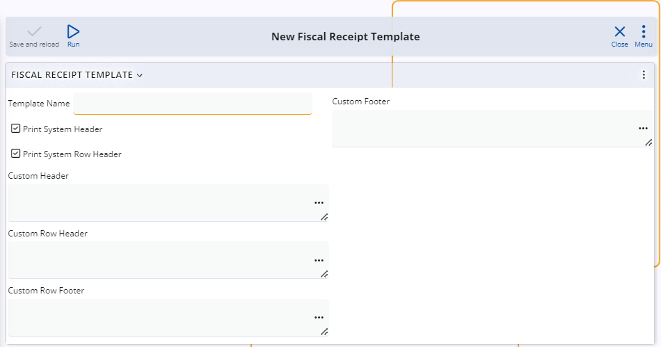
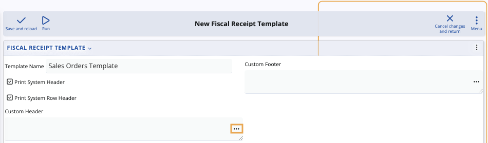
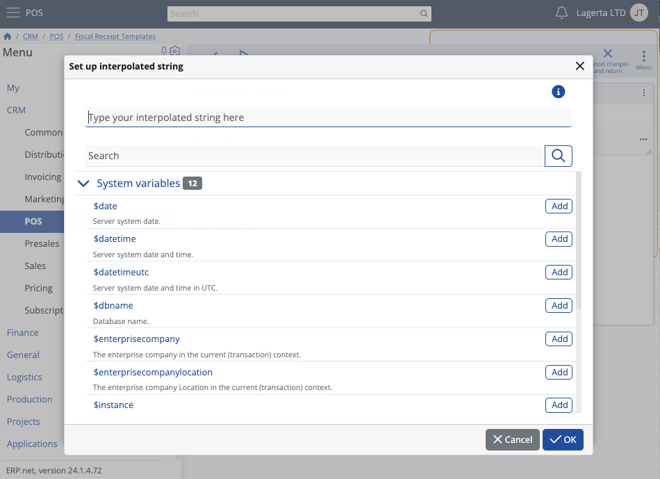
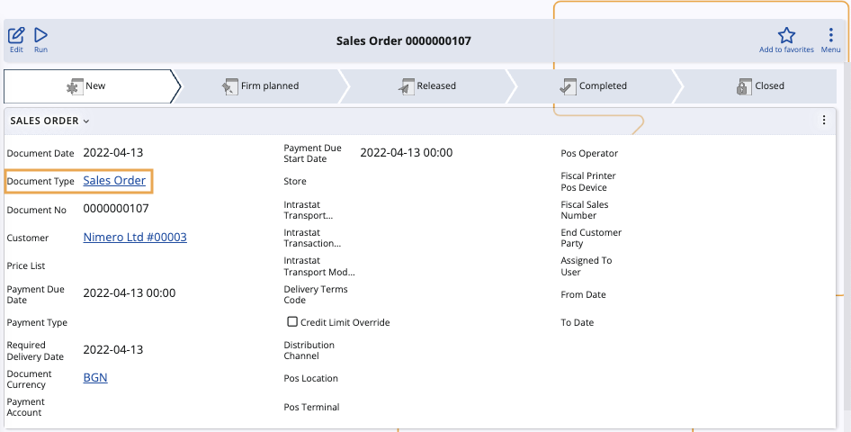

Overview
Receipt templates can provide businesses with a customizable solution that enhances their fiscal printing process. They serve as pre-designed formats that you can easily modify and apply on a document type level.
By creating such templates, you gain the flexibility to incorporate personalized text using interpolated strings in different sections on the fiscal receipt itself. This includes the ability to define:
Custom Header - refers to the text that will be printed at the top of the fiscal receipt, above the system header.
Custom Row Header - refers to the text that will be printed before certain lines of the fiscal receipt.
Custom Row Footer - refers to the text that will be printed after certain lines of the fiscal receipt.
Custom Footer - refers to the text that will be printed at the bottom of the fiscal receipt, next to the system footer.
It's possible to take fiscal receipt customization even further by defining interpolated strings:
Before/after a sale
Before/after a discount
Before/after a subtotal
Before/after payment
By tailoring these elements to their specific needs, users can ensure that every receipt reflects the identity and values of their company, sending the right messages and ultimately enhancing customer experience.

Creating a receipt template
To craft a distinctive template tailored to your business needs, you need to follow a specific set of steps.
Locate the Fiscal Receipt Templates panel within the POS section of the CRM module.

Click on the panel's Plus button to initiate the creation of a new template.
This takes you to a new page specifically designed for customizing the printouts of fiscal receipts, providing you with a comprehensive set of options to personalize a template according to your preferences.

The first required step in crafting a new template is providing a distinctive name for it.
You can do that by using the Template Name field.
Decide whether to include the Print System Header and Print System Row Header options.
This determines if custom headers and row headers will be printed as part of a fiscal receipt.
To select these options, simply press on their respective check boxes.

Click the three-dot button on any Custom field to open a separate window with several customization options.

It is here that you can provide text as well as interpolated strings for defining what exactly will be written in each respective section.
You can also locate and directly add system variables such as date, time, or location.

Warning
Keep in mind that writing interpolated strings comes with a few rules and limitations. The width of a line is considered a unique parameter for each cash register. Therefore, certain symbols need to be added when you want to align or fill out fiscal receipt lines.
You should use the following operators to transfer interpolated strings to another line:
"\r\n", "\n", "'\r", "\n", "\r".
The string will be transfered into a new line as long as it contains symbols such as "
, , " or a sequence of "\n" or "\r" symbols. To prevent receipts becoming too long in size, there is a limit in terms of how many symbols can be provided and how many new lines with interpolated strings can be created.
Text on one line will be automatically trasferred on a new line if identical symbols are present to fill the entire new line. In that case, the line with identical symbols is considered "separating" and it will be scrapped, but whatever preceded it will be moved to a new line.
Example:
"This is
text+++++++++++++++++++++++++++++++++++
++++++++++++++++++++++++++ more text"This will result in two lines:
"This is text"
"+++++++++++++more text"The length of each line depends on the cash register's capabilities.
When you're ready building your fiscal receipt template, click Save and reload.

Note
Interpolated strings can include text, domain attributes, and system variables available in the respective document type (e.g. sales order) for which you are creating a fiscal receipt template.
You can also import user-defined calculated attributes, which allow for various calculations of prices, amounts, discounts, and more, all of which are printed on the receipt.
Defining a template for a document type
Now that you've created a template, you are ready to link it to a document type.
Navigate to a document, e.g. a sales order, and open its document type.

Edit the document type definition and locate the Printouts panel. If it isn't already visible, add it through the Customize form feature.
From the Fiscal Receipt Template field, select the fiscal receipt template you created.
Click Save and reload to apply your changes.
The fiscal receipt template will now be enforced for all documents of the respective document type.
Note
The screenshots taken for this article are from v24 of the platform.